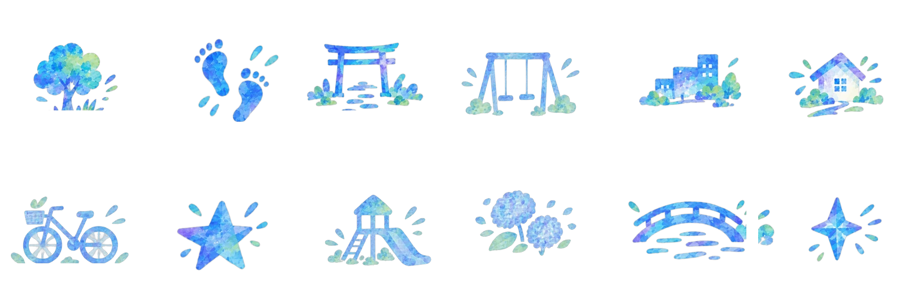
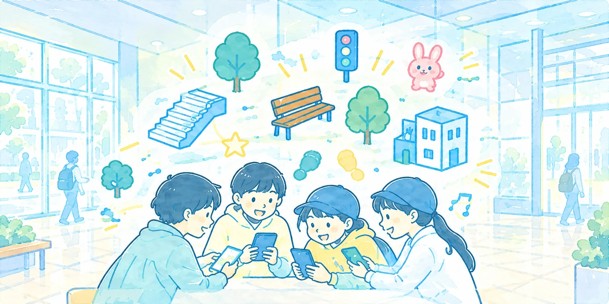
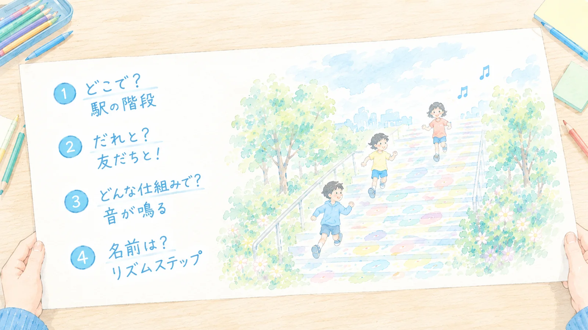
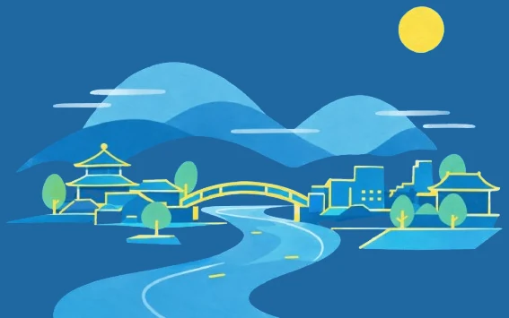
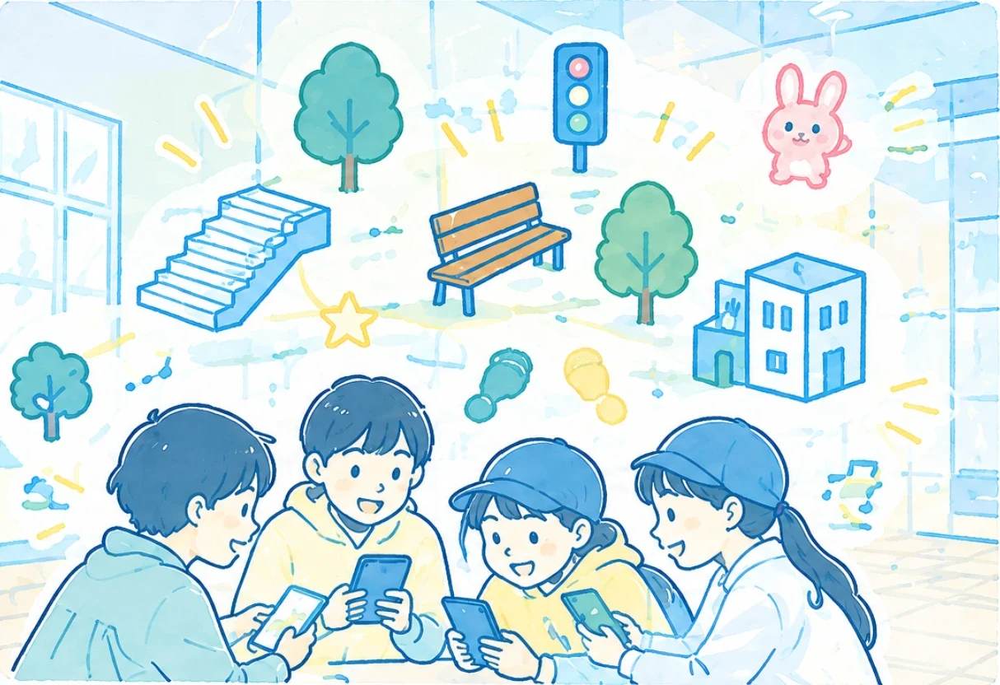
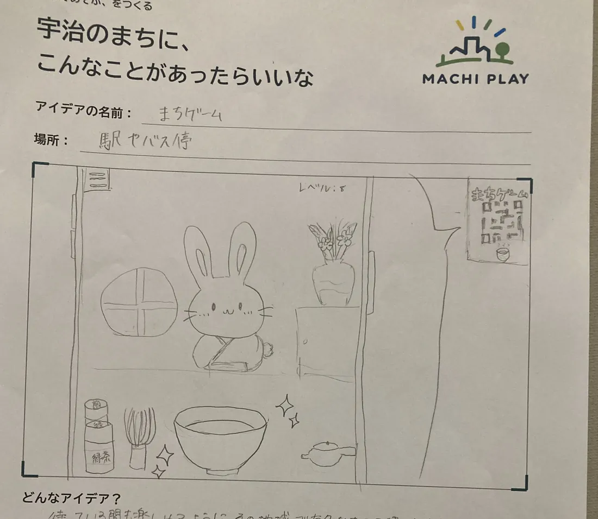
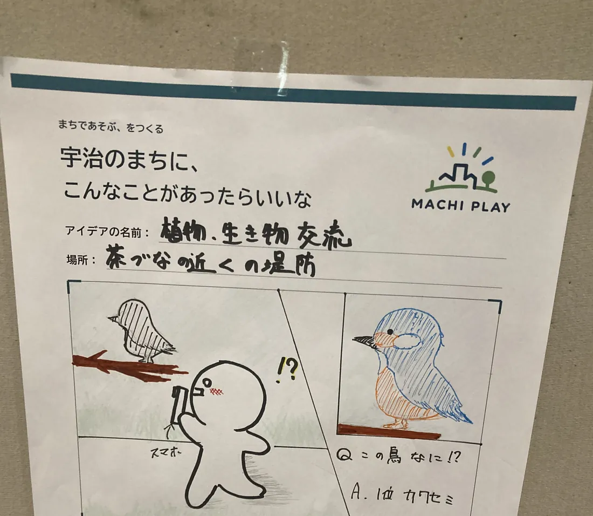
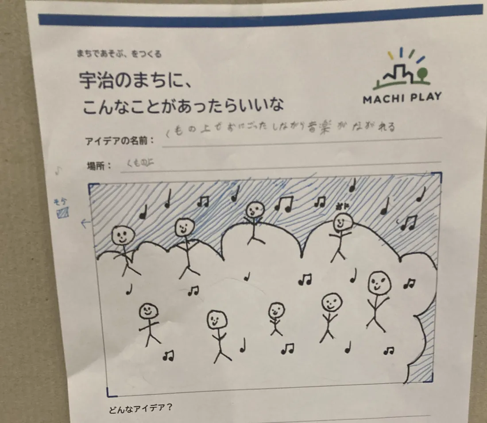
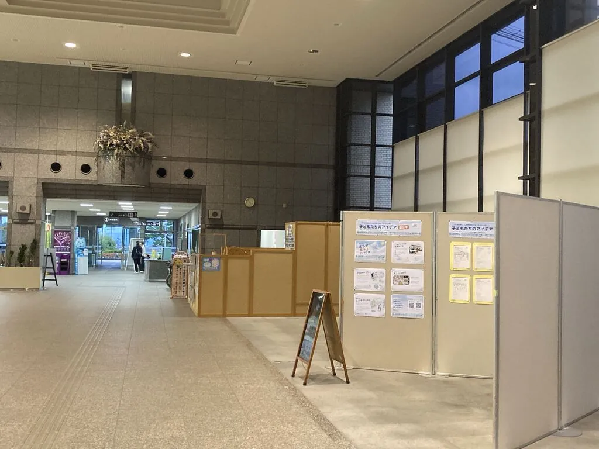

01つくる
まちで遊べる仕掛けとゲーム
歩くと反応する仕掛けや、まちを舞台にしたオリジナルゲームを企画・開発しています。（※説明文は仮です）
- その場所の特徴から遊び方を考える
- 子どもがすぐ遊べる形にする
- 試して、直して、また試す

通学路も、階段も、バス停も。少し見方を変えるだけで遊び場になります。まちで遊べる仕掛けとゲームをつくり、子どもたちと一緒に新しい遊び方を考えています。

STATEMENT
「何もない」と思っていた場所も、遊びの目で見ると違って見えてきます。段差はジャンプ台に、川べりは舞台に、通学路は冒険のコースに。
まちを好きになるきっかけは、知識よりも先に「遊んだ記憶」なのかもしれません。だからわたしたちは、まずは遊べるものをつくって、まちに持ち出します。
ワークショップ開催
1回
集まったアイデア
9件
参加者
—名
活動エリア
宇治市
歩くと反応する仕掛けや、まちを舞台にしたオリジナルゲームを企画・開発しています。（※説明文は仮です）

子どもたちと一緒にアイデアを出し、形にするワークショップを企画・運営しています。

当日の様子や、出てきたアイデアを記録して、次の企画やまちの人に手渡します。

PROJECT ／ 2026.10.3 開催
宇治のまちを「遊び」の視点からとらえ直す120分。オリジナルゲームで遊んでから、自分の「遊びたい」をアイデアシートにまとめます。
くわしく見る →
REPORT
2026年10月3日、宇治市産業会館 多目的ホール。子どもたちが考えた「宇治のまちにあったらいいな」が9枚、会場に並びました。

駅やバス停、通学路、茶畑、雲の上。身近な場所から思いもよらない場所まで、絵と短い言葉で遊び方を描いてもらいました。









PROFILE ／ 企画・開発
宇治市未来キャンパス受講生。いつもの道をもっと面白くしたいと思い、まちで遊べる仕掛けやゲームをつくっています。2026年10月のワークショップでは、企画・当日の運営・ゲームの開発を担当します。